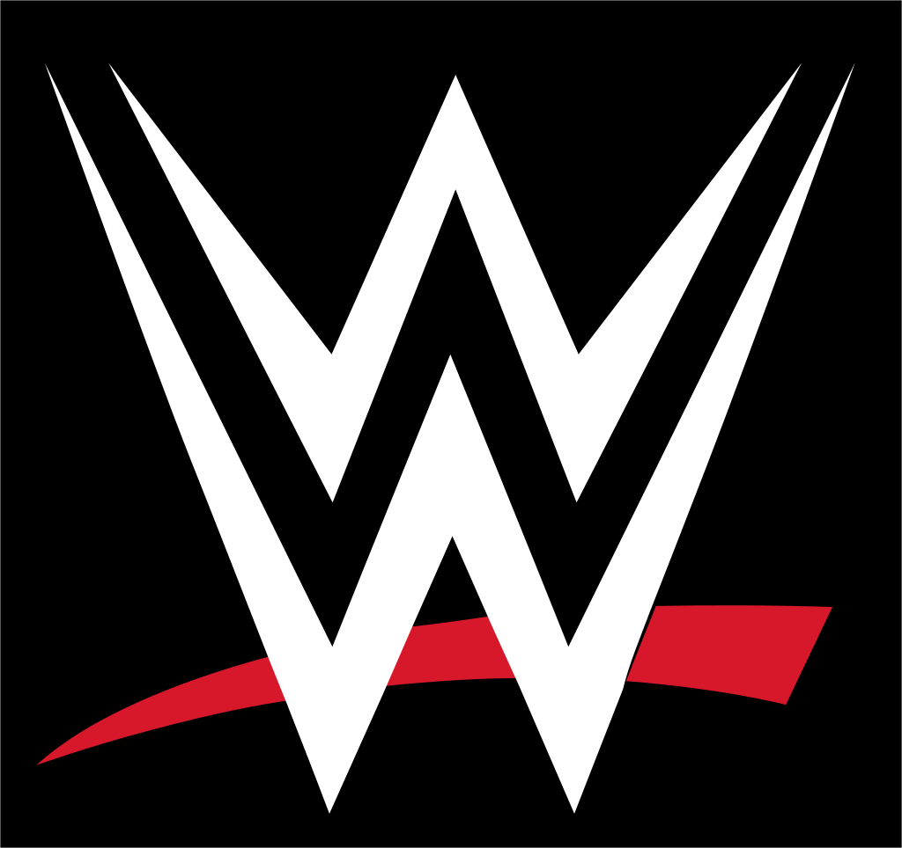
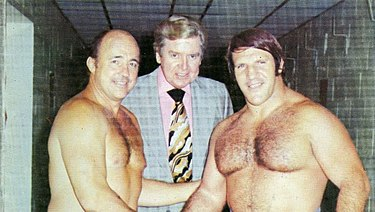
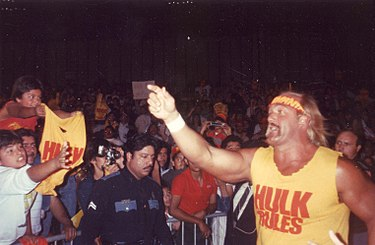
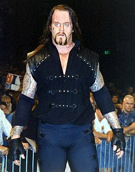
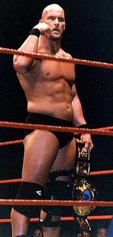

From Wikipedia, the free encyclopedia
World Wrestling Entertainment (WWE) is an American professional wrestling promotion . It is owned and operated by TKO Group Holdings, a majority-owned subsidiary of Endeavor Group Holdings .[8] A global integrated media and entertainment company, WWE has also branched out into fields outside of wrestling, including film, football, and various other business ventures. The company is additionally involved in licensing its intellectual property to companies to produce video games and action figures.
The promotion was founded in 1953 as the Capitol Wrestling Corporation (CWC), a Northeastern territory of the National Wrestling Alliance (NWA). Following a dispute, CWC left the NWA and became theWorld Wide Wrestling Federation (WWWF) in April 1963. After rejoining the NWA in 1971, the WWWF was renamed to the World Wrestling Federation (WWF) in 1979 before the promotion left the NWA for good in 1983. In 2002, following a legal dispute with the World Wildlife Fund, the WWF was renamed toWorld Wrestling Entertainment (WWE). In 2011, the promotion ceased branding itself as World Wrestling Entertainment and began solely branding itself with the initials WWE.[9]
Prior to September 2023, the company's majority owner was its executive chairman, third-generation wrestling promoter Vince McMahon, who retained a 38.6% ownership of the company's outstanding stock and 81.1% of the voting power. The current entity, which was originally named Titan Sports, Inc., was incorporated on February 21, 1980, in South Yarmouth, Massachusetts, but reincorporated under Delaware General Corporation Law in 1987. It acquired Capitol Wrestling Corporation Ltd., the holding company for the WWF, in 1982. Titan was renamed World Wrestling Federation Entertainment, Inc. in 1999, and then World Wrestling Entertainment, Inc. in 2002. In 2023, its legal name was changed to World Wrestling Entertainment, LLC.[10]
WWE is the largest wrestling promotion in the world. Its main roster is divided into two brands, Raw and SmackDown, along with a developmental roster, NXT, based in the WWE Performance Center in Orlando, Florida. Overall, WWE is available in more than one billion homes worldwide in 30 languages. The company's global headquarters is located in Stamford, Connecticut,[11] with offices in New York, Los Angeles, Mexico City, Mumbai, Shanghai, Singapore, Dubai, and Munich.[12]
As in other professional wrestling promotions, WWE shows are not true contests but entertainment-based performance theater, featuring storyline-driven, scripted, and partially choreographed matches; however, matches often include moves that can put performers at risk of injury, even death, if not performed correctly. The pre-determined aspect of professional wrestling was publicly acknowledged by WWE's owner Vince McMahon in 1989 in order to avoid taxes from athletic commissions. WWE brands its product as sports entertainment, acknowledging professional wrestling's roots in competitive sport and dramatic theater.
In 2023, WWE began to explore a potential sale of the company, amidst an employee misconduct scandal involving McMahon that had prompted him to step down as chairman and CEO, although he returned as executive chairman. [13] In April 2023, WWE made a deal with Endeavor Group Holdings, under which it would merge with Zuffa, the parent company of mixed martial arts promotion Ultimate Fighting Championship (UFC) to form TKO Group Holdings, a new public company majority-owned by Endeavor, with McMahon serving as executive chairman of the new entity, and Nick Khan becoming president. The merger was completed on September 12, 2023.[14] In 2024, McMahon, who was by now no longer the majority WWE stockholder, ended his ties with the company amid a sex trafficking scandal.[15]
World Wrestling Entertainment, LLC
This is the official logo of WWE
Trade name WWE
Formerly
Titan Sports, Inc. (1980–1999)
World Wrestling Federation Entertainment, Inc. (1999–2002)
World Wrestling Entertainment, Inc. (2002–2023)
Company type Subsidiary
Industry Professional wrestlingStreaming media
Predecessor Capitol Wrestling Corporation Ltd.
Founder
Jess McMahon or Vincent J. McMahon[a]
(as Capitol Wrestling Corporation Ltd.)
Vince McMahon and Linda McMahon
(as Titan Sports, Inc.)
Headquarters 707 Washington Blvd Stamford, Connecticut, United States
Area served Worldwide
Main article: History of WWE
WWE's origins can be traced back as far as the 1950s when on January 7, 1953, the first show under the Capitol Wrestling Corporation (CWC) was produced. There is uncertainty as to who the founder of the CWC was. Some sources state that it was Vincent J. McMahon, [16][17][18] while other sources cite McMahon's father Jess McMahon as founder of CWC. [19][20][21] The CWC later joined the National Wrestling Alliance (NWA) and famous New York promoter Toots Mondt soon joined the promotion.
Vincent J. McMahon with Verne Gagne and Bruno Sammartino in 1975
Vincent J. McMahon and Toots Mondt were very successful and soon controlled approximately 70% of the NWA's booking power, largely due to their dominance in the heavily populated Northeastern United States. In 1963, McMahon and Mondt had a dispute with the NWA over "Nature Boy" Buddy Rogers being booked to hold the NWA World Heavyweight Championship.[22] Mondt and McMahon were not only promoters but also acted as his manager and were accused by other NWA promoters of withholding Rogers making defenses in their cities versus only defending in Mondt and McMahon's own cities thus maintaining a monopoly on the world title. In a now infamous situation, the NWA sent former five-time world champion and legitimate wrestler Lou Thesz to Toronto to face Rogers on January 24, 1963. Thesz recalls this was not planned and prior to the match remembered telling Buddy "we can do this the easy way or the hard way." Rogers agreed to lose the fall and title in a one fall match versus the traditional two out of three fall matchup that most world title matches were defended. Once word reached back to Mondt and McMahon, at first they simply ignored the title change. From January until April 1963, Rogers was promoted as the NWA World Champion, or simply the World Heavyweight Champion, in their area. The World Wide Wrestling Federation (WWWF) was not an immediate creation after Rogers's one fall loss to Thesz. Mondt and McMahon both eventually left the NWA in protest and formed the WWWF in the process. They brought along with them Willie Gilzenberg, long time boxing and wrestling promoter in New Jersey. In April 1963, the WWWF World Heavyweight Championship was created, with the promotion claiming that inaugural champion Rogers had won a tournament in Rio de Janeiro on April 25, 1963, defeating long time Capitol favorite Antonino Rocca in the finals. In reality, Rocca was no longer in the area, as he was working for Jim Crockett Sr. in the Carolinas. Rogers also had already suffered what would later be a career ending heart attack on April 18 in Akron, Ohio, and was in an Ohio hospital during the time the alleged tournament took place. [23] Rogers lost the championship to Bruno Sammartino a month later on May 17, with the promotion beginning to be built around Sammartino shortly after. [24]
In June 1963, Gilzenberg was named the first president of the WWWF. [25] Mondt left the promotion in the late 1960s and although the WWWF had previously withdrawn from the NWA, McMahon quietly re-joined in 1971. The WWWF was renamed to the World Wrestling Federation (WWF) in 1979.
Vincent J. McMahon's son, Vincent K. McMahon, and his wife Linda, established Titan Sports, Inc., in 1980 in South Yarmouth, Massachusetts and applied trademarks for the initials "WWF". [26][27] The company was incorporated on February 21, 1980, in the Cape Cod Coliseum offices, then moved to the building on Holly Hill Lane in Greenwich, Connecticut.
Main article: 1980s professional wrestling boom
he younger McMahon bought Capitol from his father in 1982, effectively seizing control of the company. The actual date of sale is still unknown but the generally accepted date is June 6, 1982; however this was likely only the date the deal was struck but not finalized. On WWF television, Capitol Wrestling Corporation maintained copyrights and ownership past the June 1982 date. The World Wrestling Federation was not solely owned by Vincent J. McMahon but also by Gorilla Monsoon, Arnold Skaaland and Phil Zacko. The deal between the two McMahons was a monthly payment basis where if a single payment was missed, ownership would revert to the elder McMahon and his business partners. Looking to seal the deal quickly, McMahon took several loans and deals with other promoters and the business partners (including the promise of a job for life) in order to take full ownership by May or June 1983 for an estimated total of roughly $1 million with the three business partners receiving roughly $815,000 among them and Vincent J. McMahon receiving roughly $185,000. [28] Seeking to make the WWF the premier wrestling promotion in the country, and eventually, the world, he began an expansion process that fundamentally changed the wrestling business. [29]
At the annual meeting of the NWA in 1983, the McMahons and former Capitol employee Jim Barnett all withdrew from the organization. [22] McMahon also worked to get WWF programming on syndicated television all across the United States. This angered other promoters and disrupted the well-established boundaries of the different wrestling promotions, eventually ending the territory system, which was in use since the founding of the NWA in the 1940s. In addition, the company used income generated by advertising, television deals, and tape sales to secure talent from rival promoters, to which McMahon discussed in an interview withSports Illustrated. McMahon was quoted as saying: "In the old days, there were wrestling fiefdoms all over the country, each with its own little lord in charge. Each little lord respected the rights of his neighboring little lord. No takeovers or raids were allowed. There were maybe 30 of these tiny kingdoms in the U.S. and if I hadn't bought out my dad, there would still be 30 of them, fragmented and struggling. I, of course, had no allegiance to those little lords."[29]
McMahon gained significant traction when he hired American Wrestling Association(AWA) talent Hulk Hogan,who had achieved popularity outside of wrestling, notably for his appearance in the film Rocky III.[30] McMahon signed Roddy Piper as Hogan's rival, and then shortly afterward Jesse Ventura as an announcer. Other wrestlers joined the roster, such as The Iron Sheik, Nikolai Volkoff, Junkyard Dog, Paul Orndorff, Greg Valentine, and Ricky Steamboat, joining existing stars such asJimmy Snuka, Don Muraco, Sgt. Slaughter and André the Giant. Many of the wrestlers who would later join the WWF were former AWA or NWA talent.
Hulk Hogan pictured in 1989 was the WWF's top star during the 1980s professional wrestling boom.
The WWF would tour nationally in a venture that would require a huge capital investment, one that placed the WWF on the verge of financial collapse. The future of McMahon's experiment came down to the success or failure of McMahon's groundbreaking concept, WrestleMania. WrestleMania was a major success and was (and still is) marketed as the Super Bowl of professional wrestling. The concept of a wrestling supercard was nothing new in North America; the NWA had begun running Starrcade a few years prior. In McMahon's eyes, however, what separated WrestleMania from other supercards was that it was intended to be accessible to those who did not watch wrestling. He invited celebrities such as Mr. T, Muhammad Ali, and Cyndi Lauper to participate in the event, as well as securing a deal with MTV to provide coverage. The event and hype surrounding it led to the term Rock 'n' Wrestling Connection , due to the cross-promotion of popular culture and professional wrestling.
The WWF business expanded significantly on the shoulders of McMahon and his babyface hero Hulk Hogan for the next several years after defeating The Iron Sheik at Madison Square Garden on January 23, 1984. [31] The introduction of Saturday Night's Main Event on NBC in 1985 marked the first time that professional wrestling had been broadcast on network television since the 1950s when the now-defunct DuMont Television Network broadcast matches of Vincent J. McMahon's Capitol Wrestling Corporation. The 1980s "Wrestling Boom" peaked with the WrestleMania III pay-per-view at the Pontiac Silverdome in 1987, which set an attendance record of 93,173 for the WWF for 29 years until 2016.[32] A rematch of the WrestleMania III main event between WWF champion Hulk Hogan and André the Giant took place on The Main Event I in 1988 and was seen by 33 million people, the most-watched wrestling match in North American television history. [33]
In 1983, Titan moved its offices to Stamford, Connecticut. Subsequently, a new Titan Sports, Inc. (originally WWF, Inc.) was established in Delaware in 1987 and was consolidated with the Massachusetts entity in February 1988. [34]
Main article: Monday Night Wars
The Undertaker as "Lord of Darkness" Deadman in 1997
The WWF was hit with allegations of steroid abuse and distribution in 1992. This was followed by allegations of sexual harassment by WWF employees the following year. [35][36] McMahon was eventually exonerated, but the allegations brought bad public relations for the WWF, and an overall bad reputation. The steroid trial cost the company an estimated $5 million at a time of record low revenues. This helped drive many WWF wrestlers over to rival promotion World Championship Wrestling (WCW), including 1980s babyface hero Hulk Hogan. During this period, the WWF promoted wrestlers of a younger age comprising "The New Generation", featuring Bret Hart, Shawn Michaels, Diesel, Razor Ramon and The Undertakeramong others in an effort to promote new talent into the spotlight.
In January 1993, the WWF debuted its flagship cable program Monday Night Raw . WCW countered in September 1995 with its own Monday night program, Monday Nitro, which aired in the same time slot as Raw.[37] The two programs would trade wins in the ensuing ratings competition (known as the "Monday Night Wars ") until mid-1996. At that point, Nitro began a nearly two-year ratings domination that was largely fueled by the introduction of the New World Order (nWo), a stable led by former WWF performers Hulk Hogan, Scott Hall (the former Razor Ramon), and Kevin Nash (the former Diesel). [38]
Main article: Attitude Era
Stone Cold Steve Austin
As the Monday Night Wars continued between Raw Is War and WCW's Nitro, the WWF would transform itself from a family-friendly product into a more adult-oriented product, known as the Attitude Era. The era was spearheaded by WWF VP Shane McMahon (son of owner Vince McMahon) and head writer Vince Russo.
1997 ended with McMahon facing real-life controversy following Bret Hart's controversial departure from the company, dubbed as the Montreal Screwjob.[39] This proved to be one of several founding factors in the launch of the Attitude Era as well as the creation of McMahon's on-screen character, "Mr. McMahon".
Before the Montreal Screwjob, which took place at the 1997 Survivor Series , former WCW talent were being hired by the WWF, including Stone Cold Steve Austin, Mankind, and Vader. Austin was slowly brought in as the new face of the company despite being promoted as an antihero, starting with his "Austin 3:16" speech shortly after defeating Jake Roberts in the tournament finals at the King of the Ring pay-per-view in 1996. [40]
On April 29, 1999, the WWF made its return to terrestrial television , airing a special program known as SmackDown! on the fledgling UPN network. The Thursday night show became a weekly series on August 26, 1999 – competing directly with WCW's Thursday night program titled Thunder on TBS.